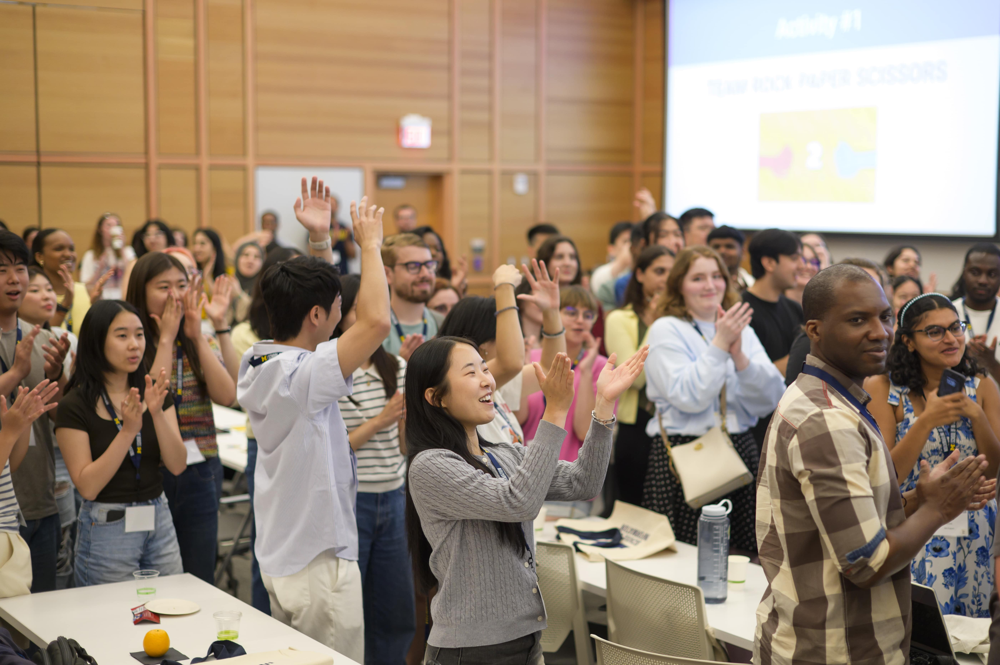
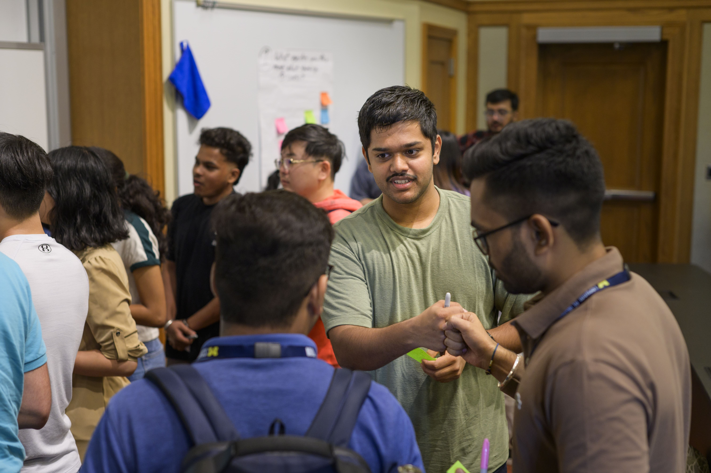

Intro to making connections
- Find Alumni: Start with CDO resources such as UMSI LinkedIn Group, CareerLink,and UCAN.
- Get a Response: Use Phone call, Zoom/Video Meeting, In-person meeting, and Email communication.
Don’t get discouraged by low response rate - average response rate to “cold messages” is around 20%. Each contact you connect with is an important and valuable addition to your network!
How can Networking help me achieve my career goals?
Networking is key to career growth, but reaching out can feel daunting. AI can help craft professional introduction messages, follow-up emails, and conversation starters tailored to different contacts. To use AI effectively, personalize each message with specific details about shared interests, mutual connections, or reasons for reaching out.
Developing a networking plan and identifying contacts using GenAI:
- "Help me develop a networking plan to expand my professional connections in [insert focus area] . The plan should include specific strategies for reaching out to industry professionals, engaging with alumni, and leveraging university networking resources. Provide actionable steps and a timeline to keep me on track."
- "Generate a list of potential networking contacts for someone pursuing a career in [insert field/focus area]. Include suggestions for how to find and approach alumni, professionals, and organizations relevant to my interests. Provide outreach strategies and sample message templates for making a strong first impression."
- "What are the best ways for a student in [insert field/focus area] to utilize university networking resources (such as career services, alumni networks, and student organizations) to build connections? Provide a step-by-step guide for making the most of these resources."
- "I want to connect with alumni in [insert field or specific company] to learn about career paths and potential job opportunities. Help me craft a plan for identifying and reaching out to alumni, including where to find them, how to structure my outreach messages, and ways to maintain long-term connections."
Networking Resources
-
Elevator Pitch Guide
An Elevator Pitch is a very fast and engaging self-introduction, purposefully designed to start a conversation. It should include engaging information about the individual and their goals. -
Building a list for strategic networking
The LAMP list is intended to help job seekers IDENTIFY and PRIORITIZE a list of target organizations for strategic networking before actively applying for jobs or internships. -
UMSI Career Development Conference Prep and Networking
Tracker tool for networking search, materials prep and update, and conference tips and actions.